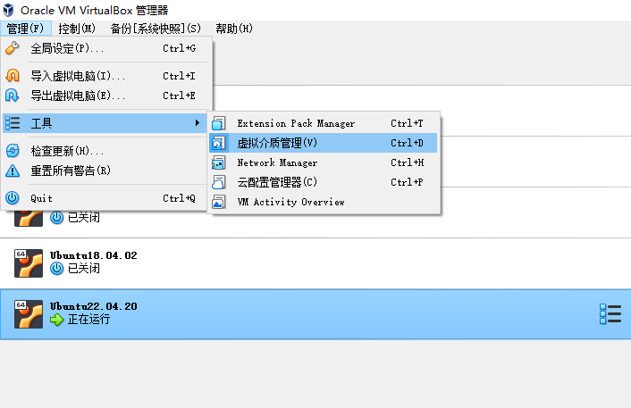
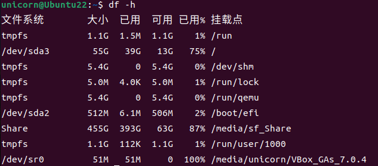
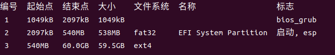

VirtualBox 系统盘无损扩容
使用 Linux 虚拟机的过程中出现了系统盘空间不足的问题，挂载了新的空间也不行，这是由于实际上并没有扩容系统盘的原因。现总结无损扩容系统盘的方法：
第一步
在 VBox 里面扩容磁盘

此时打开虚拟机会发现仍然空间不足，因为新增的这部分磁盘仍然不可用。
第二步
查看系统盘是哪一个，输入 df -h 查看，挂载点为根目录，即\的即为系统盘，记住它的名字

第三步
扩容分区，管理员权限下输入
parted输入
print /dev/sda查看磁盘分区信息和扩容目标分区的编号

对照一下之前记住的名字和大小，就知道要扩容哪一个编号。
- 输入
resize 对应编号，输入结束点（就是在现有结束点上加上你扩容的大小）
1 | (parted)resizepart 4 |
第四步
- 退出 parted，回到shell
- 扩展文件系统，输入：
resize2fs 系统盘的名字，会把文件系统扩容到增加的空间上。
第五步
重启使用 df -h 查看是否扩容成功。
参考资料
本博客所有文章除特别声明外，均采用 CC BY-NC-SA 4.0 许可协议。转载请注明来自 ForeverYolo的博客！
相关推荐


评论